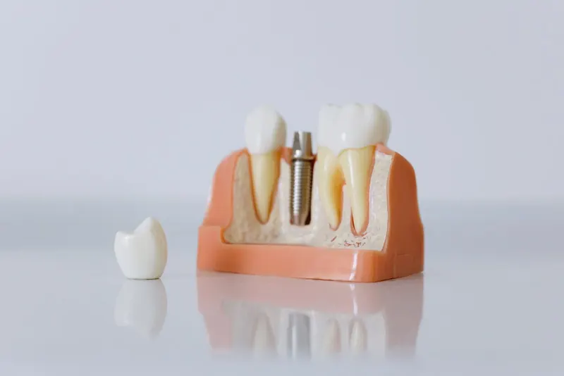
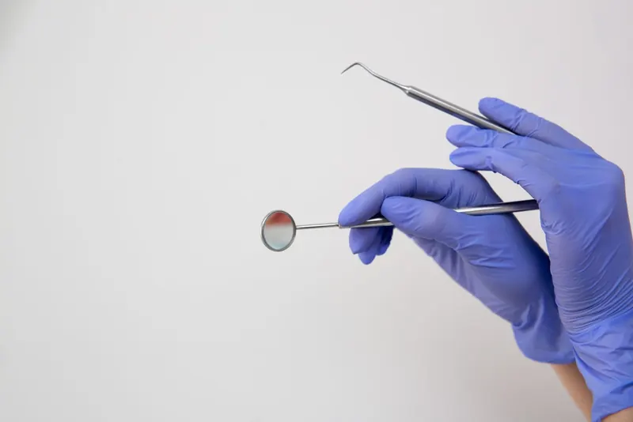
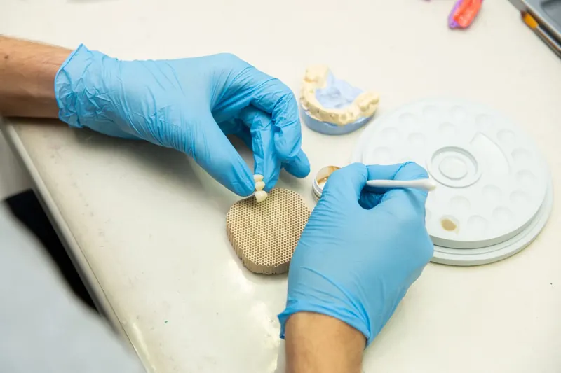

Restorative
Strong, natural, lasting
Repair what is damaged and replace what is missing. Most crowns and onlays are made in the office, in one visit.

Every treatment is explained in plain terms before it starts. Choose a chapter to begin.
Restorative
Repair what is damaged and replace what is missing. Most crowns and onlays are made in the office, in one visit.

Cosmetic
Whiten, reshape, and straighten. Dr. Desai is an Invisalign certified provider.

Preventative
Find small problems early and keep your gums healthy. Every exam includes a simple oral cancer screening.


Featured
With CEREC, your crown or onlay is scanned, designed, and made in the office. No temporary to wear and no second appointment.
Yes. The office makes crowns and onlays in house with its CEREC CAD/CAM system. That avoids a temporary and a second appointment.
Yes. Dr. Desai is an Invisalign certified provider and treats teens and adults.
The office works with most dental plans and PPOs. Call to check your plan.
Dr. Desai cares for patients of all ages. Sealants, which protect children’s teeth, are part of preventative care.
Call the office and the team will help you plan your visit.